| kisan art store |
|---|
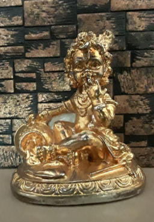 | This image shows a beautifully crafted golden-colored murti of Bal Krishna — the child form of Lord Krishna. The idol depicts Krishna in a playful sitting pose, holding butter in one hand and bringing it towards his mouth, symbolizing his well-known "Makhan Chor" |
|---|
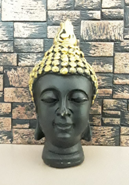 | This image shows a serene and elegant Buddha head sculpture. The piece is predominantly matte black with a smooth finish, giving it a calm and sophisticated look. The Buddha’s facial expression is peaceful, with closed eyes and a gentle smile, symbolizing deep meditation and inner harmony. |
|---|
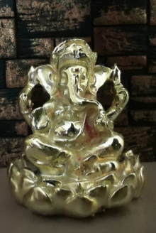 | This image shows a golden idol of Lord Ganesha, the remover of obstacles and harbinger of prosperity in Hindu tradition. The murti depicts Ganesha seated gracefully on a lotus pedestal, symbolizing purity and spiritual awakening. |
|---|
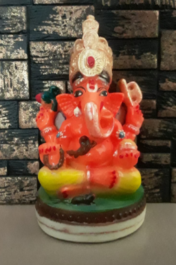 | This image shows a colorful idol of Lord Ganesha, the beloved Hindu deity known as the remover of obstacles and the bringer of wisdom and prosperity. The murti portrays Ganesha in a seated position on a round pedestal with a green base and white-brown border. |
|---|
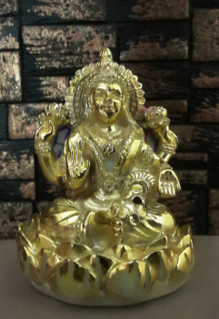 | This image shows a golden idol of Goddess Lakshmi, the Hindu goddess of wealth, prosperity, and fortune. The murti depicts Goddess Lakshmi seated gracefully on a lotus pedestal, which symbolizes purity, spiritual growth, and abundance. |
|---|
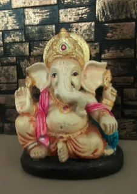 | The image shows a small statue of Lord Ganesha, a widely revered Hindu deity known as the remover of obstacles and the god of beginnings, wisdom, and prosperity. This idol is likely used for worship or decoration, symbolizing auspiciousness and inviting positive energy into the space. |
|---|
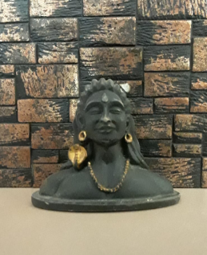 | This image shows a bust-style statue of Lord Shiva in the form of Adiyogi, a representation that signifies him as the first yogi and the originator of yoga. This statue serves as a spiritual representation, often used for meditation, decor, or worship by devotees of Lord Shiva. |
|---|
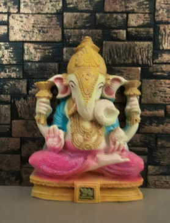 | This image features a colorful statue of Lord Ganesha, a widely worshipped deity in Hinduism, known as the remover of obstacles, the god of wisdom, intellect, and new beginnings. This Ganesha idol, with its vibrant colors and peaceful posture, is ideal for home décor, prayer rooms, or gifting during festivals like Ganesh Chaturthi. It symbolizes prosperity, wisdom, and the removal of obstacles. |
|---|
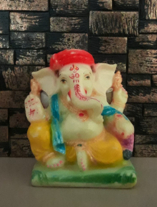 | This image shows a vibrant statue of Lord Ganesha, the beloved Hindu deity known as the remover of obstacles, god of wisdom, and patron of arts and sciences. |
|---|
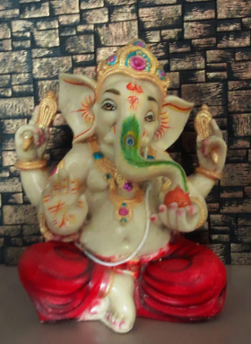 | This image features a beautifully adorned statue of Lord Ganesha, the widely worshipped Hindu deity symbolizing wisdom, prosperity, and the remover of obstacles. |
|---|
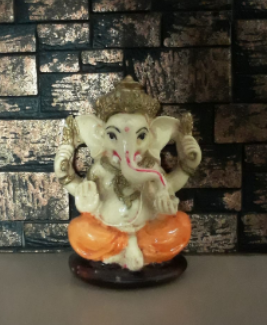 | This image shows a small and elegant statue of Lord Ganesha, the revered Hindu deity known as the remover of obstacles, god of wisdom, and symbol of auspicious beginnings. |
|---|
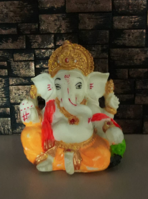 | This image shows a small, colorful idol of Lord Ganesha, the beloved Hindu deity symbolizing wisdom, prosperity, and the removal of obstacles. |
|---|
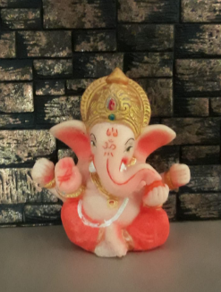 | This image features a compact and vibrant statue of Lord Ganesha, the widely adored Hindu deity symbolizing wisdom, new beginnings, and the removal of obstacles. The combination of bright orange tones, a gentle smile, and sacred symbolism makes this Ganesha idol both spiritually meaningful and visually appealing. |
|---|
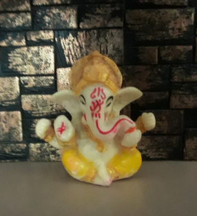 | This image shows a small, charming idol of Lord Ganesha, the Hindu god known for removing obstacles and bestowing wisdom, success, and prosperity. |
|---|
----####Thanks for visiting our store####----
For more info contact on 99******90/90******21